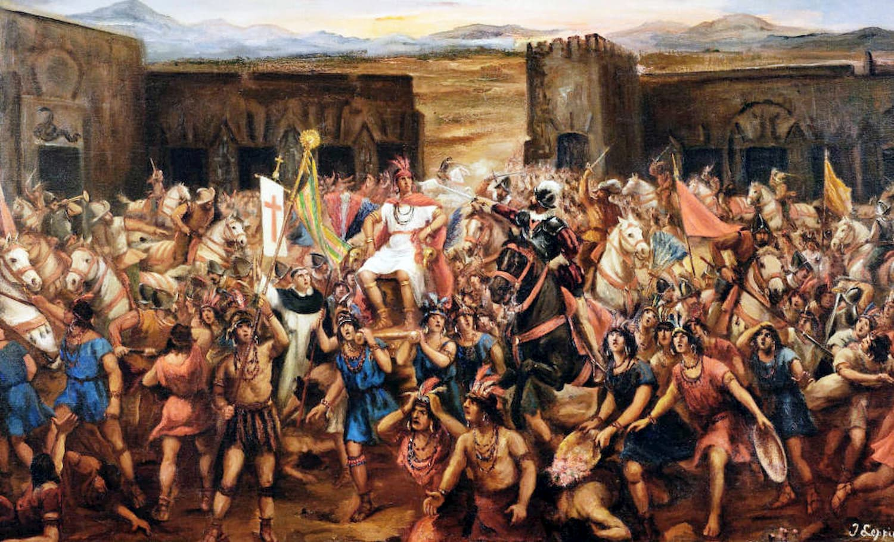

Peru's Colonial History
Peru has a rich colonial history that greatly influenced its culture and architecture. During the colonial period, which lasted from the 16th to the 19th century, Peru was under Spanish rule.
Conquistadors such as Francisco Pizarro played a significant role in the colonization of Peru. They conquered the Inca Empire and established the city of Lima as the capital.
The colonial era brought about a fusion of Spanish and indigenous cultures, resulting in unique art, music, and cuisine. The Baroque architecture of churches and cathedrals in cities like Cusco and Arequipa showcases the grandeur of this period.
Today, visitors can explore numerous colonial landmarks, including the Plaza de Armas in Lima and the Santo Domingo Church in Cusco.
Indigenous Rebellions in Peru
Peru has a long history of indigenous rebellions, where native populations fought against colonial oppression and later, for their rights and recognition.
These rebellions were often sparked by the exploitation and mistreatment of indigenous communities, as well as the loss of their lands and cultural heritage.
One notable rebellion was the Túpac Amaru II Rebellion in the late 18th century. Led by indigenous leader José Gabriel Condorcanqui, also known as Túpac Amaru II, the rebellion aimed to challenge Spanish rule and fight for indigenous rights.
Another significant rebellion was the Amazonian Indigenous Uprising in the 20th century. Indigenous communities in the Amazon rainforest protested against the destruction of their lands and the exploitation of natural resources.
